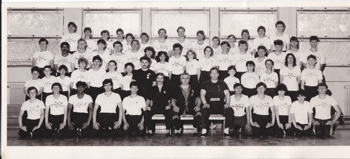
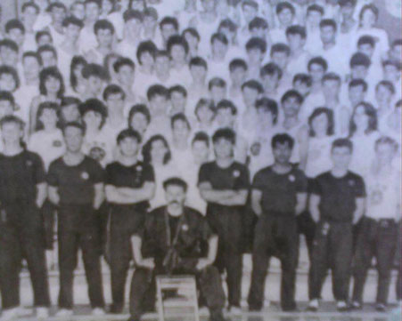
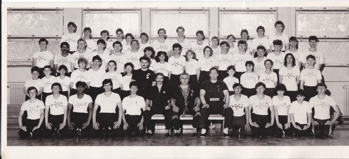
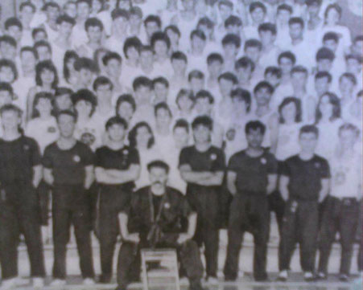
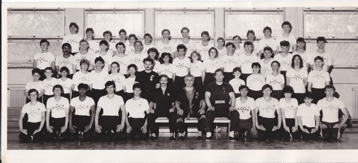
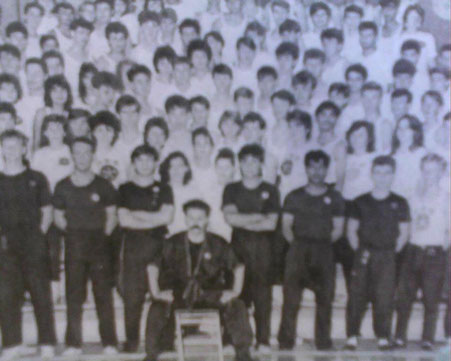

Slike

 



IVICA FU ILIC prisutan je od samog pocetka stvaranja jugoslovenskog Kungfu sporta. Bio je visestruki prvak Jugoslavije od 1985 do 1995 godine. Odbranio je KUP SAMPIONA u BEOGRADU u sportskom centru KOSUTNJAK 1997 godine. Republicki je sudija za dicplinu SANDA. MINISTARSVO sporta Republike SRBIJE mu je na osnovu novog zakona o sportu i kategorizaciji, dodelilo zvanje ,,VRHUNSKI SPORTISTA" saveznog razeda. SIFU je jugoslovenskog Kungfu sporta.

